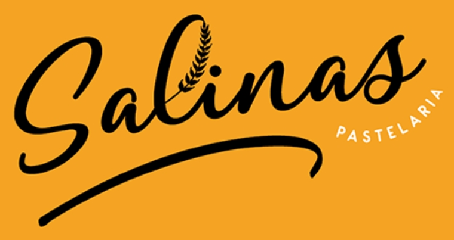
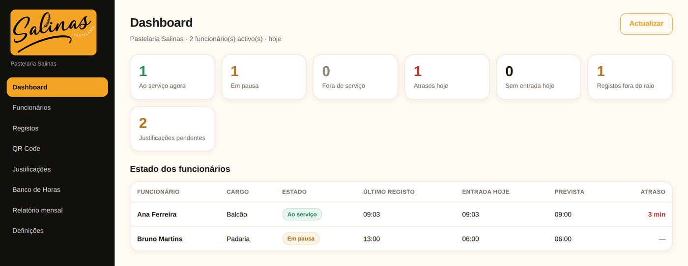
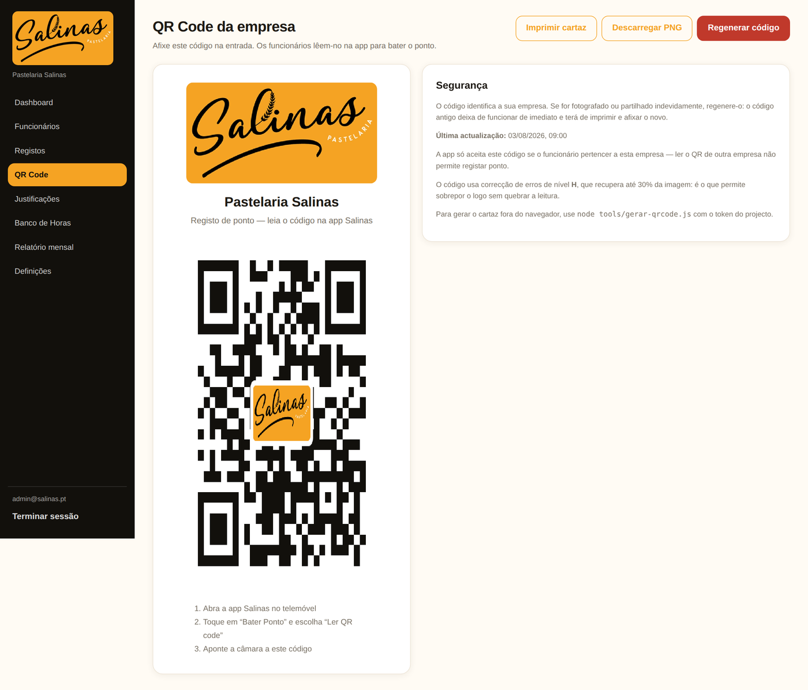
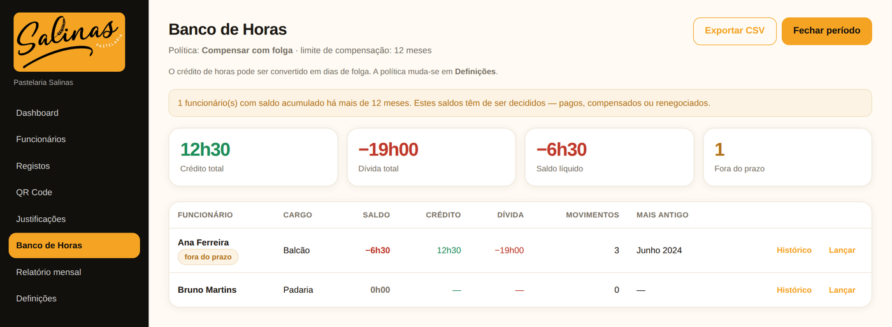
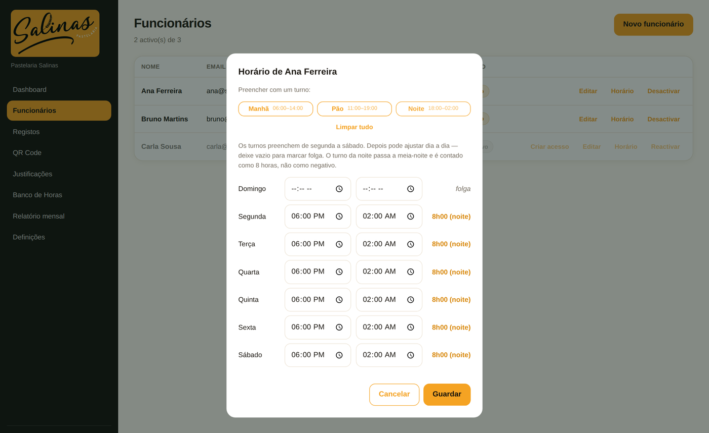
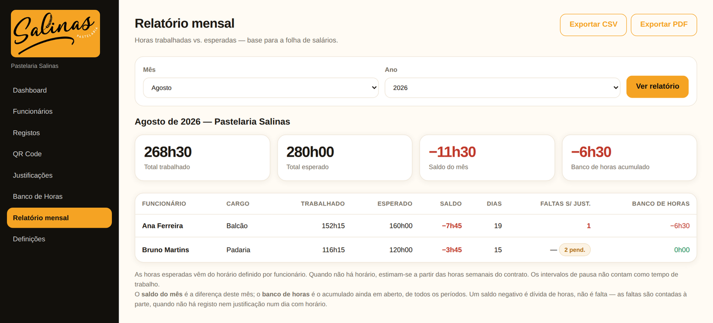
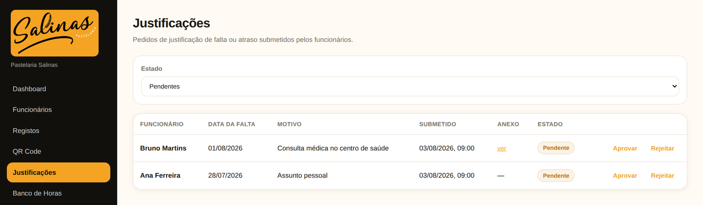
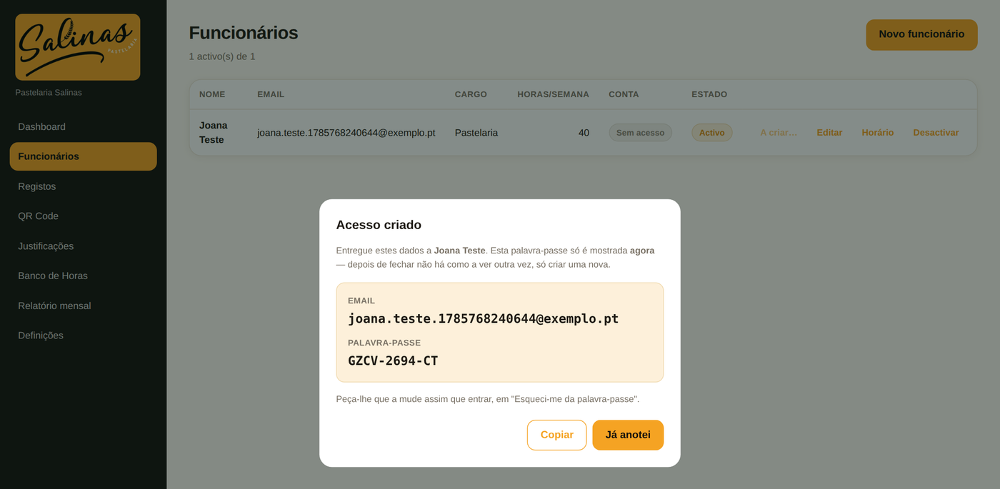

Não é só picar o ponto — é saber quem está a trabalhar, fechar o mês em minutos e nunca mais discutir horas a mais ou em falta.
O dashboard mostra, ao vivo, quem está ao serviço, quem está em pausa e quem chegou atrasado hoje — sem sair do balcão nem interromper ninguém.

QR code afixado na loja, ou GPS. A equipa usa o telemóvel que já tem — não há leitor biométrico para comprar nem terminal para avariar.

Todos os meses o sistema compara o que foi trabalhado com o que estava previsto e actualiza o saldo — crédito ou dívida — sem uma folha de Excel à parte.

Com o regime rotativo activado, um dia sem ponto batido conta como folga — não como falta — mesmo com a folga a mudar de semana para semana.

Horas trabalhadas, esperadas e saldo, por pessoa. Exporta em CSV e envia directamente para quem faz a folha de salários.

Cada pedido de falta chega com data e motivo. Aprova ou recusa num clique, e a resposta aparece logo na app da pessoa.

O envio de emails tem um limite baixo — por isso o acesso de cada funcionário é criado na hora, com uma palavra-passe para entregar em mão.
